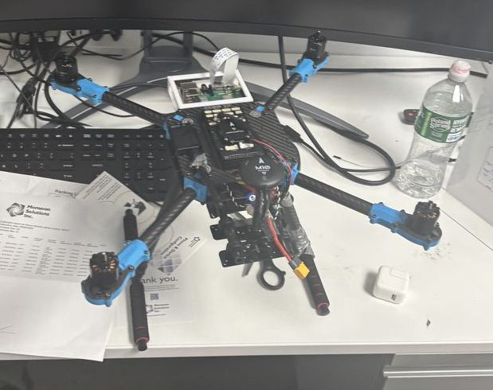

AeroWatt
Stevens Institute of Technology, summer 2026. Six INA226 current monitors on the flight computer, calibrated against a Monsoon to 1.07% mean agreement. I ran 54 trials, more than 48 million samples, and caught an averaging artifact that overstated thermal sensitivity sixfold. Second of nine authors, accepted at IEEE MILCOM 2026.